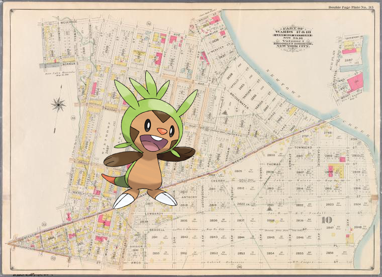

Pokémon in the NYPL archives
2018-4-23 06:22:00

Chespin +
Double Page Plate No. 35: [Bounded by Meserole Avenue, Front Street, (Newtown Creek) Bridgewater Street, Meeker Avenue, Gardner Avenue, Townsend Street, Scott Avenue, Division Place, Gardner Avenue, Amos Street, Kingsland Avenue, Richardson Street, Meeker Avenue, Humboldt Street, Nassau Avenue, Jewell Street, Norman Avenue and Newell Street.]
.